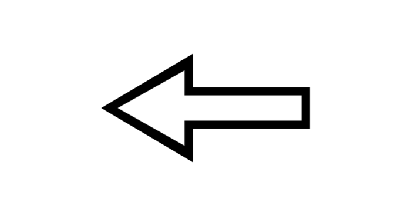

Need for Speed — серия гоночных компьютерных игр, выпускаемая компанией Electronic Arts и разработанная в нескольких студиях, включая канадское отделение EA Black Box, британскую компанию Criterion Games и шведскую Ghost Games. В настоящее время разрабатывается под брендом EA Sports.
Forza Horizon — видеоигра в жанре автосимулятор с открытым миром, разработанная компанией Playground Games совместно c Turn 10 Studios исключительно для игровой приставки Xbox 360. Это часть считается больше спин-оффом, чем полноценным продолжением франшизы. Игра вышла в октябре 2012 года.
